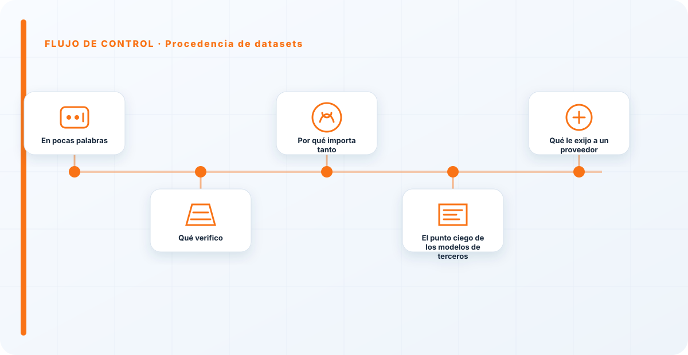
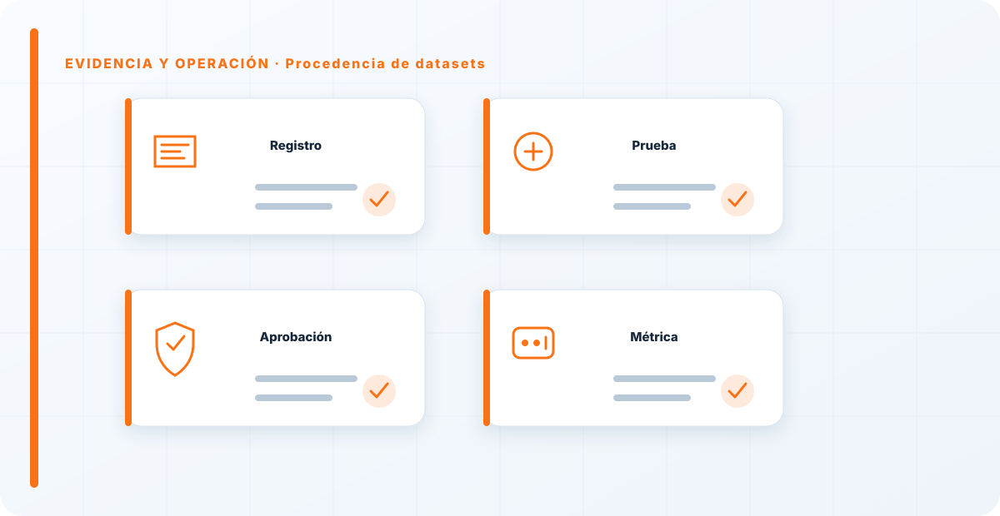

En pocas palabras
Un modelo es tan fiable —y tan legal— como los datos con los que se entrenó. La procedencia de datasets consiste en saber de dónde salieron esos datos, si había derecho a usarlos, qué calidad tenían y si pudieron estar envenenados o sesgados. Si no conoces los datos de entrenamiento, no conoces tu modelo: heredas todos sus problemas sin haberlos visto.
Qué verifico
El origen de los datos de entrenamiento, si había derecho a usarlos, su calidad y si pudieron estar envenenados o sesgados. Cada una de esas cosas puede estallar de forma distinta: un dataset sin permiso es una bomba legal; uno envenenado, una puerta trasera en el modelo; uno sesgado, un modelo que discrimina de fábrica sin que nadie lo decidiera.
Son problemas que no se arreglan después, porque ya están cocidos dentro del modelo. Por eso la verificación es antes de adoptar, no después de desplegar.
Por qué importa tanto
La procedencia de los datos es a la vez un problema de seguridad, de calidad y —cada vez más— legal, por el copyright. Se registra en el AI-BOM como parte de la cadena, junto al modelo que produjo.
Que sea un problema de tres caras a la vez es lo que lo hace tan importante y tan fácil de ignorar: no encaja limpiamente en "seguridad" ni en "legal", así que a menudo no lo mira nadie.

El punto ciego de los modelos de terceros
Cuando el modelo es de un tercero, la procedencia de sus datos es tu mayor punto ciego: no viste con qué se entrenó, así que heredas a ciegas sus sesgos, sus problemas legales y sus posibles envenenamientos. La única defensa real es exigir transparencia —que el proveedor documente con qué entrenó— o asumir explícitamente que estás construyendo sobre un cimiento desconocido.
En datos, lo que no sabes sí te puede hacer daño, y con modelos de terceros es justo lo que no sabes lo que más riesgo acumula.
Qué le exijo a un proveedor
Cuando el modelo o el dataset viene de fuera, mi mejor herramienta es la exigencia de transparencia. Pido, por contrato cuando se puede, que documenten con qué se entrenó: fuentes, derechos de uso, y qué medidas tomaron contra el sesgo y el envenenamiento. No espero el detalle exacto de cada dato, pero sí garantías razonables de que el proveedor sabe lo que me está vendiendo.
Si un proveedor no puede o no quiere decir nada sobre sus datos de entrenamiento, esa opacidad es en sí misma una respuesta, y una señal de riesgo. La transparencia que exijes antes de firmar es mucho más barata que la investigación forense que harás después de un problema.
Cuando el modelo es de terceros, la procedencia de sus datos es tu mayor punto ciego: heredas todos los problemas de un dataset que no viste. Por eso, o exiges transparencia sobre con qué se entrenó, o asumes que estás construyendo sobre un cimiento desconocido. En datos, lo que ignoras no es neutral: es riesgo acumulado esperando a manifestarse.
Los errores que veo una y otra vez
- No conocer el origen de los datos de entrenamiento.
- Usar datasets sin derecho de uso.
- No considerar el envenenamiento de datos.
- Ignorar el sesgo heredado del dataset.
- No exigir transparencia a modelos de terceros.
Cómo lo llevaría a un entorno real
Cuando aterrizo procedencia de datasets en una organización, no empiezo por comprar una herramienta ni por redactar veinte páginas. Empiezo por dibujar qué ocurre hoy: quién solicita el cambio, quién lo aprueba, qué sistemas intervienen, qué datos cruzan el proceso y quién se entera cuando algo falla. Ese dibujo suele descubrir más problemas que cualquier checklist. En cadena de suministro, lo peligroso no es solo carecer de controles; también lo es creer que existen porque alguien los escribió una vez.
Después separo lo imprescindible de lo deseable. Lo imprescindible debe poder comprobarse: un responsable identificado, una regla clara, una evidencia fechada y un mecanismo para reaccionar. En este caso revisaría especialmente Procedencia, datasets y responsable. No me vale una respuesta del tipo «lo gestiona el proveedor» o «eso lo mira seguridad». Necesito saber qué persona toma la decisión, con qué información y dentro de qué plazo.
La implantación debe crecer con el riesgo. Un piloto interno puede funcionar con una ficha breve y una revisión manual. Un sistema que afecta a clientes, empleados, dinero o información sensible necesita segregación de funciones, pruebas independientes, monitorización y un expediente mantenido. Mi criterio es sencillo: cuanto más difícil sea deshacer el daño, más fuerte debe ser la barrera antes de producción.
Decisiones que deben quedar por escrito
Hay decisiones que no deberían vivir en una reunión ni en un mensaje de chat. Para procedencia de datasets dejaría documentados el alcance, los supuestos, los límites de uso, las excepciones aceptadas y las condiciones que obligan a detener o reevaluar. El documento no tiene que ser enorme, pero sí debe permitir que otra persona entienda por qué se hizo lo que se hizo.
También registraría quién puede cambiar control, quién valida evidencia y quién recibe las alertas relacionadas con Procedencia. Cuando esas tres responsabilidades se mezclan, aparece el clásico problema: el mismo equipo construye, aprueba y declara que todo funciona. No siempre se puede separar por completo, sobre todo en organizaciones pequeñas, pero al menos debe existir una revisión por alguien que no dependa del éxito inmediato del despliegue.
Las excepciones merecen un tratamiento propio. Una excepción sin fecha de caducidad acaba convirtiéndose en la arquitectura real. Por eso exigiría motivo, riesgo aceptado, responsable, compensaciones, fecha de revisión y criterio de cierre. Si falta uno de esos elementos, no es una excepción gestionada; es una deuda invisible.

Un ejemplo práctico
Imaginemos que un equipo quiere incorporar procedencia de datasets a un servicio que ya está en producción. La propuesta promete reducir tiempos y automatizar tareas, pero utiliza componentes que cambian con frecuencia. Antes de aprobarlo, pediría una prueba limitada, un inventario de dependencias, un flujo de datos y una definición clara de qué acciones quedan fuera del alcance.
Durante la prueba recogería resultados normales y casos límite. No solo miraría si funciona; comprobaría qué ocurre cuando faltan datos, cambia una versión, se pierde conectividad, llega una entrada manipulada o un usuario intenta superar sus permisos. Ahí es donde se ve si el diseño aguanta. En muchas pruebas felices todo parece seguro porque nadie ha intentado romper la hipótesis de partida.
Si los resultados son aceptables, la salida a producción tendría condiciones: versión fijada, configuración aprobada, logs disponibles, responsables de guardia, procedimiento de rollback y revisión tras las primeras semanas. Si alguno de esos elementos no existe, prefiero retrasar el despliegue. Un día de demora suele ser más barato que investigar después un comportamiento que nadie puede reconstruir.
Qué evidencias guardaría
Para demostrar que el control funciona conservaría evidencias que cuenten una historia completa, no capturas sueltas. La historia debe enlazar necesidad, decisión, implementación, prueba y operación. En procedencia de datasets eso incluye como mínimo la ficha del activo, el diagrama vigente, la configuración aprobada, el resultado de las pruebas y el registro de cambios.
No guardaría información por acumular. Si los logs contienen prompts, documentos, datos personales o secretos, aplicaría minimización, control de acceso y retención. La evidencia debe ayudar a investigar y auditar sin crear una segunda fuga de información. Es frecuente endurecer el sistema principal y dejar un repositorio de evidencias abierto a demasiadas personas.
- Propietario y finalidad de procedencia de datasets, con fecha de revisión.
- Inventario de Procedencia, datasets y dependencias asociadas.
- Criterios de aceptación y resultados sobre responsable y control.
- Configuración efectiva, versión y aprobación del cambio.
- Alertas, incidentes, excepciones y acciones correctivas cerradas.
Señales de que el control no está funcionando
El primer síntoma es que nadie sabe responder con rapidez quién es el responsable. El segundo es que la documentación describe una versión distinta de la que está operando. El tercero es que las alertas existen, pero llegan a un buzón que nadie revisa. Cuando aparecen esos tres síntomas, el problema no es tecnológico: el control se ha desconectado de la operación.
También desconfío de las métricas demasiado perfectas. Cero incidentes, cero excepciones y cien por cien de cumplimiento pueden significar excelencia, pero con frecuencia significan que no estamos mirando. Prefiero indicadores que enseñen tendencia: tiempo de corrección, antigüedad de excepciones, cobertura de pruebas, cambios sin revisión y reincidencias.
Por último, revisaría el comportamiento después de cada cambio significativo. En IA, una actualización de modelo, dataset, prompt, herramienta, permiso o proveedor puede alterar el riesgo sin cambiar el nombre del servicio. Si el proceso solo reevalúa cuando se crea un proyecto nuevo, se quedará ciego durante la mayor parte de la vida útil.
Mi criterio de cierre
Considero que procedencia de datasets está razonablemente controlado cuando el equipo puede explicar el proceso sin depender de una sola persona, reconstruir una decisión con evidencias y detener el servicio sin improvisar. No busco perfección documental; busco que la organización pueda tomar decisiones repetibles bajo presión.
El cierre no consiste en marcar todas las casillas. Consiste en demostrar que los riesgos relevantes tienen propietario, que los controles se prueban y que las desviaciones producen una acción. Si la evidencia no cambia ninguna decisión, probablemente estamos generando burocracia. Si una decisión importante no deja evidencia, estamos creando fragilidad.
Este enfoque es el que intento mantener en toda CyberLibrary AI: explicar el control de forma que lo entienda negocio, pero con suficiente profundidad para que arquitectura, seguridad, auditoría y operaciones puedan aplicarlo de verdad.
Referencias y marcos relacionados
Contenido educativo y técnico. No sustituye asesoramiento jurídico ni una auditoría formal.